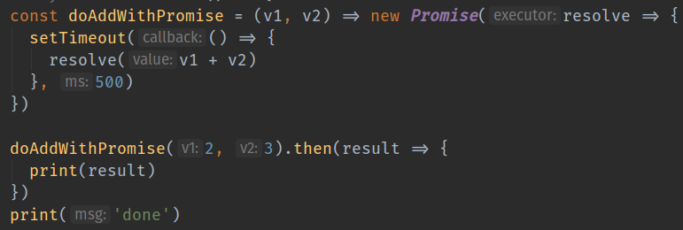

Functional Reactive Programming (101)
when data arrives, let it flow through series a of functions to be processed, to get the desired outcome
Email: kctang@big2.net | Twitter: @kctang
github.com/kctang/frp101
Functional Reactive Programming
- Manage data flow & transformation with concepts borrowed from functional programming (declarative, chaining, immutability)
- Asynchronous programming style to manage events that happens over a period time
Data Flow & Transformation
Example: Multiply each value by 7; Get the total value for all even numbers
const data = [1, 2, 3, 4, 5, 6, 7, 8, 9, 10]
data.map(val => val * 7)
.filter(val => val % 2 === 0)
.reduce((total, current) => total + current, 0)
> 210- #3. Multiply each number by 7
- #4. Filter for even numbers
- #5. Sum filtered values to get the answer
Data Flow & Transformation
Example uses functional programming concepts:
- Declarative
- Function chaining
- Immutable data
Data Over a Period of Time
// in previous example, data is a fixed length array
// and all elements are known before it is used
const data = [1, 2, 3, 4, 5, 6, 7, 8, 9, 10]What if I don't know how much data needs to be processed?
What if data is not ready to be processed?
- Can we still map, filter, reduce, etc?
Yes, with "Observable Chain"
- ~ takes observable as input instead of fixed length array data
- Operators chaining used to create or manipulate observables, mimicing function chaining
// an observable that generates 1 to 10
// over a period of time (every 500ms)
const data$ = interval(500).pipe(
map(no => no + 1),
take(10)
)
data$.pipe(
map(val => val * 7),
filter(val => val % 2 === 0),
reduce((total, current) => total + current, 0)
).subscribe(
val => print(`Subscription got val [${val}]`),
e => console.error(e),
() => print('Subscription done')
)Wait, what is this observable thing?
Asynchronous Programming
Promise is an ~ style
Observable is an ~ style
Common Scenarios
Without asynchronous programming, web browser (JavaScript engine) will hang when...
- File read/write [s]
- Make REST API call [s]
- Taking photo using Camera API [s]
- Get GPS coordinates from device [m]
- Get data from Firebase [m]
- Chat applications [m]
[s]ingle value
[m]ulti value
Promise
- Produce one value when resolve() is called
- Runs when promise object is created

Output:
> done
(500ms later...)
> 5
Observable
- Like Promise, produce value asynchronously
- Produce a value whenever .next() is called
- Done when .complete() is called
- Does not "run" until subscribed to
Output:
> done
(100ms later...)
> 5
(200ms later...)
> 6
(300ms later...)
> 0.666
> really done
So what?
Examples From Production Applications
Example 1: Compress and Upload/Save Image
Observable chain manage:
- Update UI with processing/upload progress
- Compress image
- Upload to server via REST API if running as web app
- Save to IndexDB/WebSQL if running as mobile app
- User can cancel upload process
- Support retry on network failure
- Error handling
Example 2: Download associated images and save to disk
Observable chain manage:
- Make REST API call to get image URLs for a record
- For each image URL, download and save to disk
- Download up to 3 images concurrently
- When done, update application state (to render in UI)
Stock Quote Demo
- stock ticker generate quotes whenever price change
- ask broker should i buy?
- ask broker should i sell?
- perform buy/sell transaction
- update application state
Described as an observable chain

Focus on business logic
These can take time
Summary
- A way of thinking...
- Think about how to design observable chains
- Observable chains is used to model data flow and transformations over time
- Write programs that is easy to read & maintain
Thank You!
Email: kctang@big2.net | Twitter: @kctang
github.com/kctang/frp101